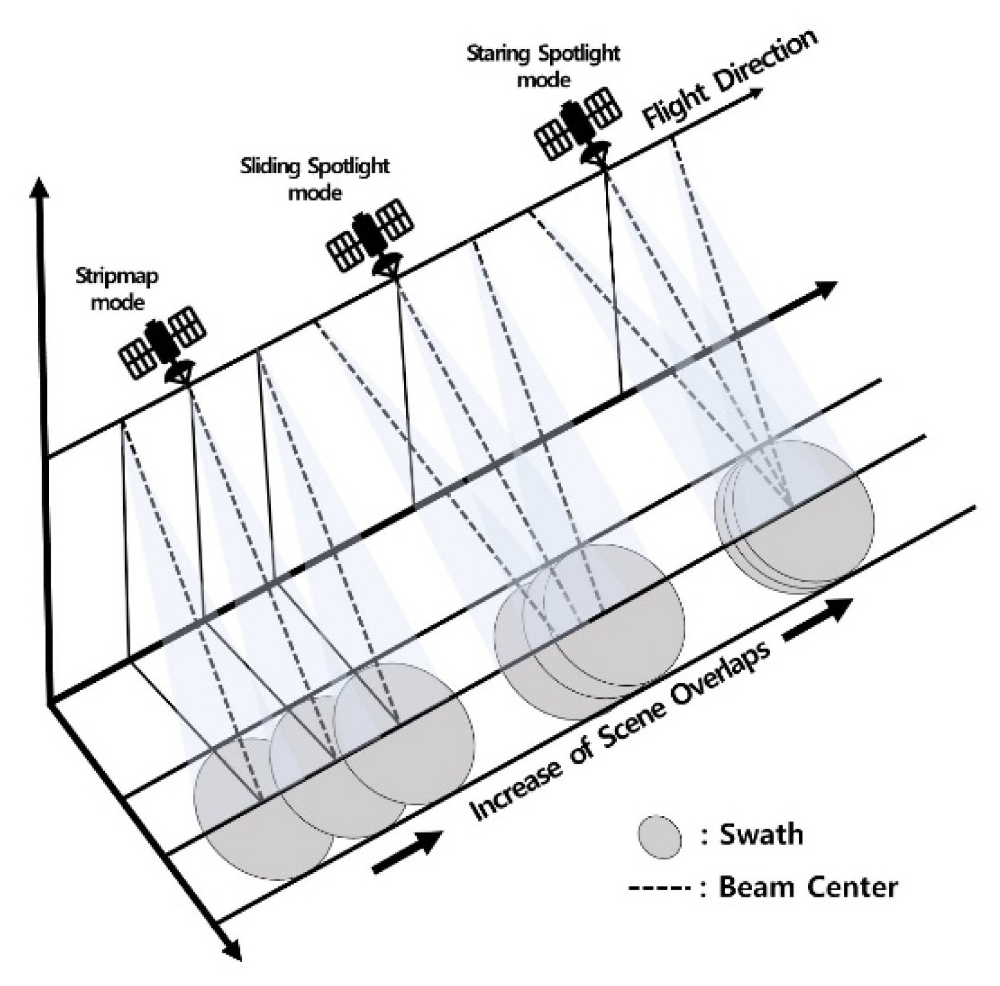

연구실적 · 국외전문학술지
Performance Comparison between Monostatic and Bistatic Staring Spotlight Modes Based on Several Scenarios
 DOI
DOI PDF
PDF
초록
This paper analyzes the performance of the bistatic staring spotlight mode in a low-orbit satellite environment and then compares it with the performance of the monostatic staring spotlight mode. The staring spotlight mode provides high-resolution images by continuously stare at the target via azimuth beam steering. However, monostatic synthetic aperture radar (SAR) systems may not achieve the desired performance in this mode owing to the geometric limitations of performing missions using a single satellite. To overcome these limitations, a bistatic SAR system that uses two satellites is considered in this study. By using two satellites, uncertain ground structures can be handled with flexibility. Moreover, a strategically planned design for a bistatic SAR system can help achieve a wider range and better performance than a monostatic SAR system. By applying this design to the staring spotlight mode, a SAR system that offers both high-resolution images and good performance is proposed.
사이트 원문 표기
Seong Joo Maeng, Suk-Jin Kim, Jung-Hwan Lim, Jae Wook Lee, Taek-Kyung Lee, Woo-Kyung Lee, “Performance Comparison between Monostatic and Bistatic Staring Spotlight Modes Based on Several Scenarios”, Journal of Electromagnetic Engineering and Science, vol. 25, no. 4, pp. 318-327, 2025
BibTeX
@article{Maeng_2025,
title={Performance Comparison between Monostatic and Bistatic Staring Spotlight Modes Based on Several Scenarios},
volume={25},
ISSN={2671-7263},
url={http://dx.doi.org/10.26866/jees.2025.4.r.302},
DOI={10.26866/jees.2025.4.r.302},
number={4},
journal={Journal of Electromagnetic Engineering and Science},
publisher={Korean Institute of Electromagnetic Engineering and Science},
author={Maeng, Seong Joo and Kim, Suk-Jin and Lim, Jung-Hwan and Lee, Jae Wook and Lee, Taek-Kyung and Lee, Woo-Kyung},
year={2025},
month=July,
pages={318–327}
}